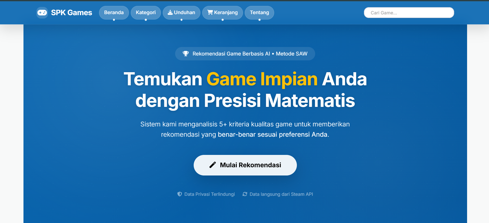

Project

SPK Game
ini adalah fake project website native menggunakan bootstrap 5 yang dimana datanya di ambil dari API steam buat simulasi
HTMLCSSPHPJavaScript
Lihat detail proyek lengkap di LinkedIn:
Faktur Rohman — LinkedIn
ini adalah fake project website native menggunakan bootstrap 5 yang dimana datanya di ambil dari API steam buat simulasi
Lihat detail proyek lengkap di LinkedIn:
Faktur Rohman — LinkedIn